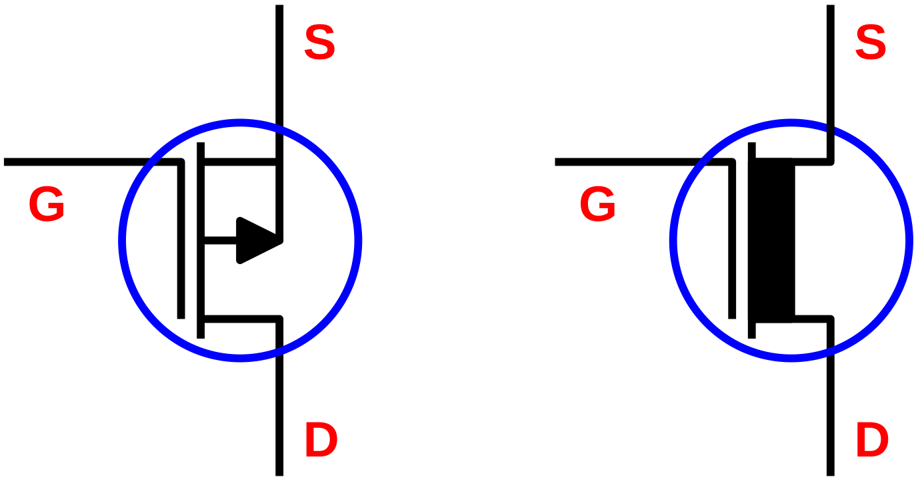
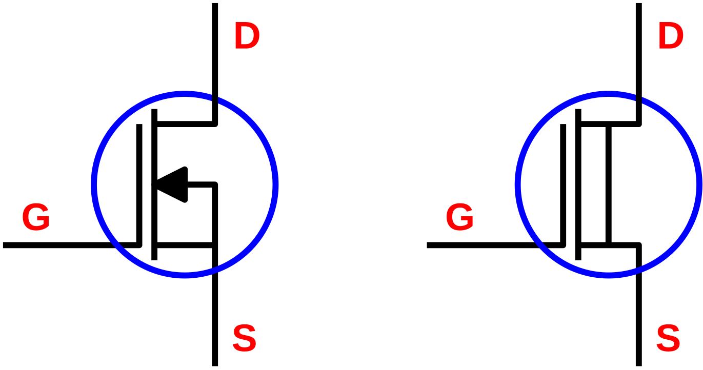
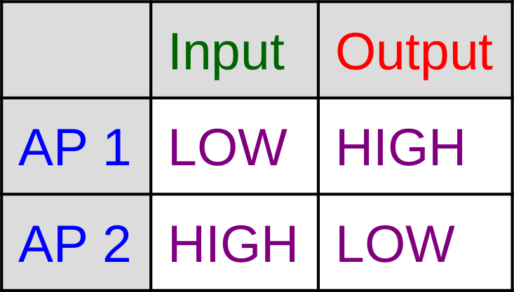
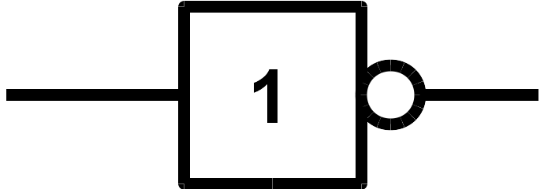
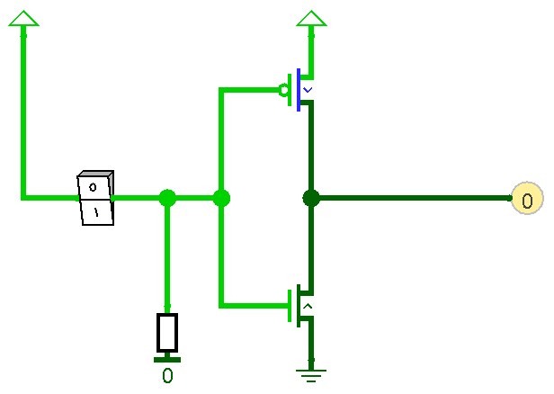

MOSFETs
Beim MOSFET (Metal Oxide Semiconductor Field Effect
Transistor)
handelt es sich um einen Feldeffekttransistor, dessen Gate durch eine Oxidschicht isoliert ist.
Daher auch die Bezeichnung IGFET (Insulated Gate Field Effect
Transistor) bzw. auch MISFET (Metal Insulator
Semiconductor
Field Effect Transistor).
Aufbau und Funktionsprinzip
Der MOSFET besitzt normalerweise drei Anschlüsse:
-
Gate(G): Der Steuereingang -
Source(S): Quelle der Ladungsträger -
Drain(D): Abfluss der Ladungsträger
Die zwischen Gate und Source anliegende Spannung UGS steuert den Widerstand der Drain-Source-Strecke RDS.
Der MOSFET eignet sich besonders gut für Schaltanwendungen. Er kann aufgrund seines isolierten Gate-Anschlusses quasi leistungslos angesteuert werden. Nur beim Umschalten fließt kurzzeitig ein Gatestrom, da die Gate-Source-Strecke wie ein kleiner Kondensator wirkt.
MOSFET Typen
Man unterscheidet vier Typen von MOSFETs:
|
|
Anreicherungstyp |
Verarmungstyp |
|
P-Kanal |
|
 |
|
N-Kanal |
|
 |
NMOS als Schalter
Um die Funktionsweise eines NMOS-Transistors als Schalter zu verdeutlichen, wird eine Simulation
mit
Qucs durchgeführt.
Das Gate des NMOS-Transistors wird mit einer linear ansteigenden Gate-Source Spannung UGS(t) beaufschlagt.
Drainstrom ID(t) und die Drain-Source Spannung
UDS(t) werden aufgezeichnet.
Aus den Daten wird der Drain-Source Widerstand in Abhängigkeit von der Gate-Source-Spannung
RDS(UGS) berechnet.
Schaltplan der Simulation

Eingangskennlinie der Simulation

UGS(t)
Ausgangskennlinien der Simulation

UDS(UGS)
|

ID(UGS)
|

RDS(UGS)
|
Schaltverhalten des NMOS
Der NMOS-Transistor verhält sich wie ein spannungsgesteuerter Schalter.
Ab einer Gate-Source Spannung von UGS=2,5 schaltet die
Drain-Source Strecke durch. Der Widerstand VRDS sinkt
um
mehrere Größenordnungen auf unter 10Ω.
Analyse der Schaltung: NMOS als Inverter

In der Ausgangskennlinie der obigen Schaltung kann man zwei Arbeitspunkte definieren.
Die Pegel beider Arbeitspunkte kann man in eine Wahrheitstabelle eintragen.

Aus dieser Wahrheitstabelle entnimmt man, dass die Schaltung wie ein Inverter oder ein Nicht-Gatter in der Digitaltechnik fungiert.

Vor- und Nachteile der Schaltung
Der Aufbau der Schaltung ist sehr einfach, es genügt ein Transistor.
Allerdings hat diese Schaltung einen Nachteil: Der Ausgang kann niederohmig nur gegen GND
(LOW-Pegel) gezogen werden. Dabei fließt auch noch ein relativ hoher Strom, der durch den
Drain-Widerstand R1 gegeben ist.
Ein höherer Drain-Widerstand kann diesen Strom reduzieren. Wird die Schaltung jedoch belastet,
wirkt
die Kombination aus Drain-Widerstand und Lastwiderstand wie ein Spannungsteiler. Um den
High-Pegel
am Ausgang sicher erreichen zu können darf der Lastwiderstand nicht kleiner sein als das
Zehnfache
des Drain-Widerstands. Diese Eigenschaften kann man in der unten verlinkten Aufgabe nachrechnen.
Der Open Drain Bus
Der Open Drain Bus ist eine kurzschlussfeste Bus-Struktur mit der
sich
mehrere Nodes (Teilnehmer) über eine gemeinsame elektrische
Verbindung zusammenschalten lassen.
Die gemeinsame Bus-Leitung muss mit einem Pullup-Widerstand gegen HIGH gezogen werden, da
ihr
Pegel undefiniert wäre, wenn die Ausgangs-Transistoren aller Nodes sperren.

Der Pegel des gemeinsamen Bus-Leitung wird auf LOW gezogen, sobald
einer
der Teilnehmer den Bus auf LOW. Der LOW
Pegel
ist dominant, d.h. er kann nicht von einem anderen Teilnehmer durch
einen
HIGH Pegel überschrieben werden.
Da der HIGH Pegel des Busses nur dann erreicht wird, wenn die
Ausgänge
aller Nodes auf HIGH Pegel liegen, bildet der Bus eine wired-AND Struktur.
Vorteile des OD-Busses
-
Einfacher Aufbau
-
Kurzschlussfest
Nachteile des OD-Busses
-
Anfällig für elektromagnetische Störungen
-
nur für kurze Distanzen geeignet
CMOS-Technik
Bei der CMOS-Technik
(Complementary Metal-Oxide-Semiconductor) werden komplementäre MOSFETs
verwendet, d.h. NMOS und PMOS Transistoren. Diese Technik dominiert inzwischen den Großteil der
Digitaltechnik. Der Hauptvorteil ist die geringe Verlustleistung dieser Bausteine.
CMOS Inverter

Am Beispiel des CMOS Inverters lassen sich die Vorteile dieser
Technik
gut veranschaulichen.
Die Ausgangsstufe des CMOS Inverters besteht aus zwei komplementären Transistoren, die eine
Gegentakt-Endstufe bilden.
Immer nur einer der Transistoren ist leitend und zieht den Ausgang niederohmig gegen LOW oder gegen HIGH.
Im Gegensatz zum Open-Drain Inverter ist kein Pullup-Widerstand nötig. Somit ist die Gesamtstromaufnahme des CMOS-Inverters in unbelastetem Zustand praktisch gleich Null.
CMOS Inverter mit Tristate-Ausgang
Der CMOS Inverter mit Gegentaktendstufe hat den Nachteil, dass er nicht an einem Bus verwendet
werden kann. Dazu benötigt man einen Tristate-Ausgang.
Der Tristate-Ausgang kann drei Zustande annehmen:
-
LOW -
HIGH -
high-Z(hochohmig)
Zusätzlich zum den Logikeingängen besitzen Bausteine mit Tristate-Ausgängen immer einen
zusätzlichen
Eingang, der meistens als Output-Enable (OE
bezeichnet wird. Dieser Eingang aktiviert die Ausgangsstufen, d.h. er schaltet die Ausgänge vom
hochohmigen in den niederohmigen Zustand.